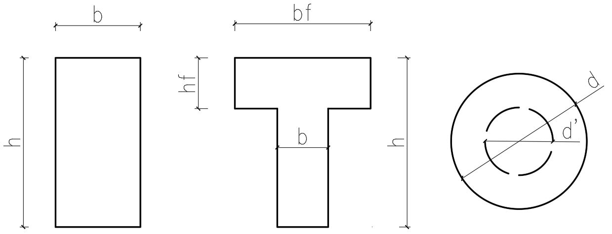

混凝土等效矩形截面应力图系数计算
混凝土截面
矩形
T形
圆形
环形
混凝土截面宽 b
mm
混凝土等级
C15
C20
C25
C30
C35
C40
C45
C50
C55
C60
C65
C70
C75
C80
混凝土截面高 h
mm
混凝土σ-ε
规范公式
过镇海曲线
T形截面翼缘宽 b
f
mm

T形截面翼缘高 h
f
mm
环形截面外直径 d
(圆形截面直径 d)
mm
环形截面内直径 d'
mm
钢筋牌号
HPB300
HRB335/HRBF335
HRB400/HRBF400/RRB400
HRB500/HRBF500
钢筋面积 A
s
mm
2
显示截面应力变化过程
取默认值
说明：
1.输入相关参数，然后点击“提交”,计算结果包括等效矩形截面应力图系数和图表
2.由于服务器运算能力及网络带宽限制，需要运行20~60s，请耐心等待
3.为提升用户体验，可不勾选“显示截面应力变化过程”，以尽快加载
4.没时间做前端了，导致无法异步POST，以至于页面需全部加载完才能显示，就这样吧~
5.版本v0.1，源代码已开源至https://github.com/zqthu/RC_web
6.开发者:张强，zhangqia16@mails.tsinghua.edu.cn